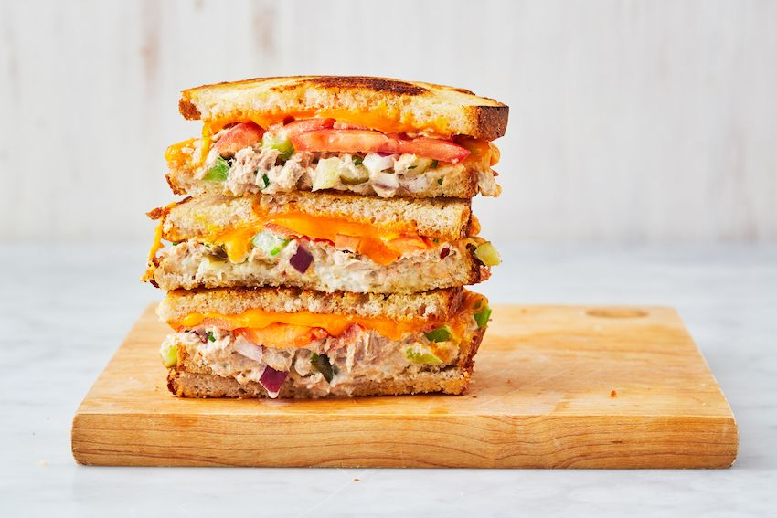

Tuna Melt

Description
Delicious tuna melt sandwich that melts in your mouth.
Ingredients
- 1/3 cup mayonnaise
- Juice of 1/2 lemon
- 1/2 teaspoon crushed red pepper flakes
- 2 6-oz cans tuna
- 1 rib celery, finely chopped
- 2 dill pickles, finely chopped
- 1/4 red onions, finely chopped
- 2 tablespoons freshly chopped parsley
- Kosher salt
- Freshly groudn black pepper
- 8 slices bread
- 2 tablespoons butter
- 1 tomato sliced
- 8 slices of cheddar
Steps
- Preheat oven to 400°. In a large bowl, whisk together mayonnaise, lemon juice, and red pepper flakes (if desired).
- Drain tuna then add to mayonnaise mixture. Use a fork to break up tuna into flakes. Add celery, pickles, red onion, and parsley and toss to combine. Season with salt and pepper.
- Butter one side of each bread slice. Top an unbuttered side with approximately 1/2 cup of tuna salad, 2 to 3 slices tomato, and 2 slices of cheese. Top with another slice of bread, buttered side facing up. Repeat with remaining ingredients and place on a large baking sheet. Bake until cheese is melted, 5 to 8 minutes.